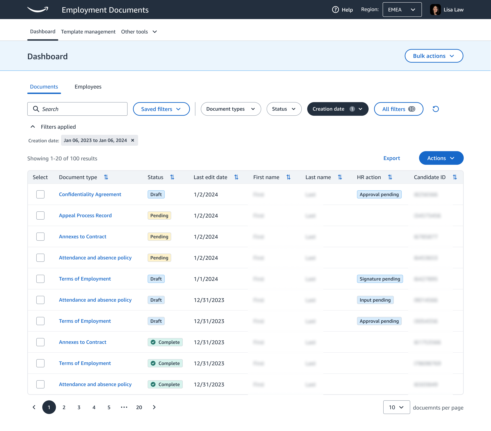
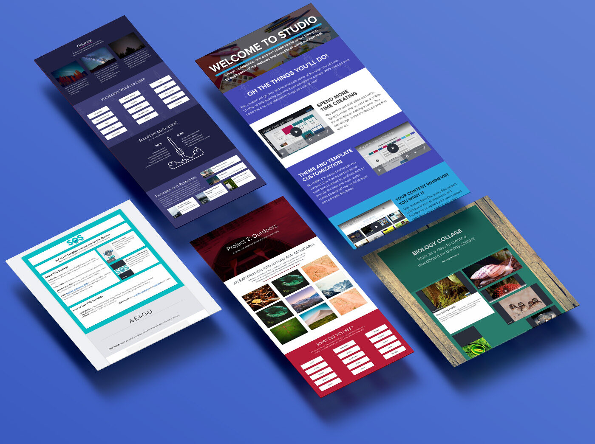

- Doc
- JA-2026
- Author
- Joseph Alfonso, Lead Product Designer
- Location
- Seattle
- Rev.
I lead design on enterprise systems at Amazon scale, and I find the problems nobody put in the brief.
15+ years in product design, leading design since 2014 at Amazon and Discovery Education, from a document platform with 4.8 billion records in 67 countries to real-time collaboration tools for K–12 classrooms. I also mentor early-career designers at Designlab and the School of Visual Concepts.
01 Selected work

Amazon · 2020–present
Employee Document Management & AI
$10M+ saved per year
Early in research I found employees using screen readers who had memorized where menu items sat, because the product couldn’t be read aloud. I led the redesign of the platform behind 4.8 billion documents in 67 countries, then designed how AI shows up across four of its product surfaces.
Read the case study →None of our usability studies caught this. The people it affected most had stopped using the product the way we designed it, so they never showed up in the data.

Amazon · A to Z app
Self-Service Resignation
Redesigning how employees quit
Resigning used to mean a form and a confirmation screen. I ran the leadership workshops, built the business case, and pushed for a flow that shows people their other options and treats the ones who still leave with respect.
Read the case study →“Growth” kept coming up in exit conversations. What people usually meant was access to training on other teams.

Discovery Education
Discovery Education Studio
Real-time collaboration for K–12 classrooms
Teachers and students were emailing, downloading and re-uploading files just to work together. I led the design of Studio: shared boards where a class can create together and see each other’s cursors move live, on whatever device they have.
Read the case study →The first version handed everyone every control. We ended up hiding most of it behind sensible defaults and letting people reach for more.